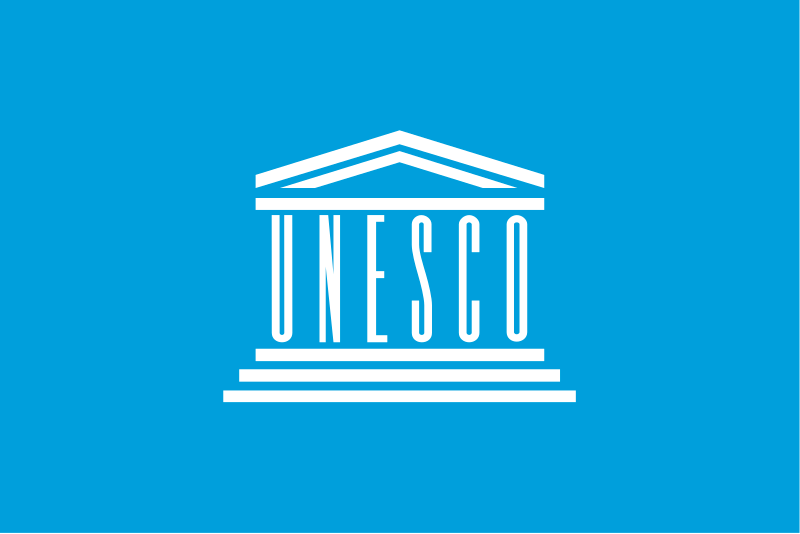

Hamar og UNESCO
Hamar som UNESCO Creative City
Hamar som UNESCO Creative City
Unesco (United Nations Educational, Scientific, and Cultural Organization)
er en internasjonal organisasjon innenfor FN med målet å spre fred gjennom utdanning, kunst, vitenskaper og kultur.
Unesco Creative City Network er et program av Unesco med målet å fremme samarbeid mellom byer som fokuserer på kultur
vitenskap som strategiske drivere for bærekraftig byutvikling.
Programmet ble oprettet i 2004, og er delt inn i 7 delkategorier.
I 2020 fikk Hamar status som UNESCO Creative City in Media Arts.
Media Arts handler om bruk av teknologiske løsninger for å kommunisere, formidle, samhandle og skape merverdi gjennom kunnskapsformidling, kultur og kunst.
I alt 22 byer har denne statusen på verdensbasis. Hamar er den første norske byen som utnevnes i kategorien Media Arts.
I Hamar er hele 5,8 % av arbeidsstyrken engasjert i kreative næringer og enheter knyttet til mediekunst.
Hamar har landets største spillutviklingsklynge, Hamar Game Collective, og VR-klyngen VRINN, og byen er kjent for The Gathering i Vikingskipet.
I tillegg har Hamar en rekke bedrifter og aktører som har kreativ bruk av teknologi som bærende element.
Hamars søknad ble utarbeidet i samarbeid mellom blant annet Høgskolen i Innlandet, The Gathering, Hamar Kulturhus,
Hamar Game Collective, Hamar kulturskole, Fabelaktiv, Hamar næringsforum, festivalene, SINN, Kunstbanken, Teater Innlandet, Innlandet fylkeskommune
Hamar katedralskole, Kodeklubben, e-sport-miljøet, Anno museum, Hamar naturskole og Frivilligsentralen, i tillegg til noen andre aktører.